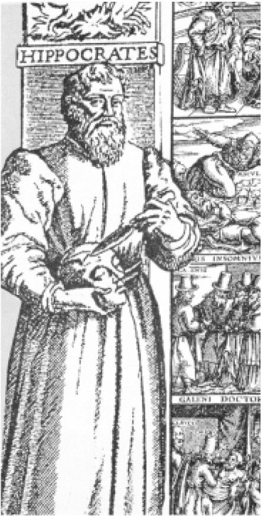

医事法是一个新兴的独立专业领域，对医疗行业的管理则历史悠久。通过侵入人体获得报酬是一种引人注目的特权，这也伴随着特殊的责任。长久以来，众所周知的是，医学与其他行当有所不同（即使这一点正在被迅速地遗忘）。也许整形外科医生与木匠拥有同样的技能，但自古以来骨骼和肌肉都被认为是由重要的甚至是神秘的物质组成，它们与松木或胶合板是不一样的。骨骼和血肉是灵魂的容器。假如容器陷入混乱，那么灵魂会遭受侵扰。以上种种，让包括内科和外科在内的所有医生获得了大祭司般的权威，令人敬畏。
祭司是一个独立存在的阶层，在人们的期望中，他们应当比芸芸众生表现得更好。所有的祭司都在神殿里侍奉神明，对神明负责。同样地，那些在人类灵魂的物质神殿中侍奉（无论是开胸探查，还是将水蛭置于残肢）的祭司们（医生），应当对躯体的主人或是代表着他们的社会负责。然而，这种可问责性面临着一个问题：如果这个祭司的地位至高无上，而这种工作的专业性远远超过问责者的智识，那么问责该如何实现呢？
医生们说服大家，为了公众的利益，医界必须自律。作为最佳例证的“希波克拉底誓词”出现于公元前5世纪（也许是希波克拉底学派从一些神秘的毕达哥拉斯学派前辈那里借用而来）。这项行为准则由医生起草，以医生为对象，也主要由医生实施。
在这之后两千五百年岁月的大部分时间里，“希波克拉底誓词”，或者说它的诸多变体中的某一个，形成了医学界的法律规范。需要指出的是，这些“准则”并非通常意义上的法律。它们由伦理规范组成，是一个非常专业的职业群体的内部规则。医学的圣地由穿着白大褂、身上血迹斑斑的执刀祭司们主宰。除非自律明显失效，或者法律获得罕有的自信，抑或出现质疑神秘精英自治的政治必要性，否则法律很难认为踏足医学的圣地是必要或恰当的。
总体观察，欧陆国家对医疗界的管理走在英国、英联邦国家及美国的前面，这背后的原因很难概而论之。例如，法国和德国对医生的保密义务设定法律责任远早于英国，但各国如此设定的动机却不一样。天主教传统的法国也许受到忏悔和告解室中类似保密义务的影响。如果的确如此，法国的医疗保密义务可能就源自告解的神圣性，而非对患者的人权保障。与此不同，德国则比很多国家更热衷于为了监管而监管。然而，直到20世纪中叶，几乎世界各地的医疗从业者在享有优越的社会地位的同时，还拥有近乎豁免的法律地位，这令人难以接受。
纳粹德国改变了这一状况。纳粹德国医生们的所作所为表明，专业的资质并不必然意味着体面与良知。

图1 希波克拉底（约公元前460—约前370），“西方医学之父”，被认为（可能是误认）是“希波克拉底誓词”的作者。作为一篇关于医学伦理原则的宣言，“希波克拉底誓词”衍生出后世诸多医学管理规范
这种认识发端于法国大革命和第一次世界大战期间，血淋淋的事实全面打破了上层社会不犯错的神话。然而，人们能认清留着一字胡、拥有头衔的将军的愚蠢本质，并不意味着会承认一位保证用专业能力治病救人、措辞严谨地探讨生死问题的医生有可能是无能或彻头彻尾邪恶的。纳粹德国医生门格尔的暴行让全世界明白一件事，那就是不能将希望完全寄托于医疗界的自律。此时此刻，法律之治尤为重要。
世界各国迅速吸取教训。第二次世界大战刚刚落幕，一大批国际宣言和职业守则就纷纷面世，其中包括1947年的《日内瓦宣言》（1968年、1983年修订）和1949年世界医学会的《国际医学伦理守则》（1968年、1983年修订）。 [1]
这种对时代思潮（zeitgeist）的变革，由职业守则具体形塑，为职业守则所体现，在对不当医疗行为的监管方面相当有效（尽管如此，如后文将探讨的，医学研究仍不断出现糟糕的问题，特别是在某些不愿意实施这些新颁布的、本就缺乏强制力的国际宣言的国家或地区）。某些技术操作不当的医疗行为系出于善意，涉及它们的司法政策则更难变革。法官们仍旧倾向于认为，判决临床行为构成医疗过失意味着造反，是马克思主义革命的危险苗头。毕竟，法官和医生曾在同样的学校学习，喝着同样的陈酿红酒。如果容许医生的专业判断被质疑，这种对于专业的质疑会如何蔓延？法律职业也许就是下一个遭受抨击的。这导致了“博勒姆标准”的滥用，本书第六章将具体探讨这个问题，该标准是法院最常用的判断医生是否违背义务的裁判规则。按照“博勒姆标准”，如果医生的行为被令人信赖的相关专业意见所认可，则该医生的行为不构成医疗过失。
尽管该标准的滥用在逐渐减少，但滥用的情形仍在发生。评判医生行为的标准应该由法律而非医生自己来设定，这是不言而喻的道理。宪法诉讼律师会这样假设，社会大众也这样希望，然而，并非世界上所有的法官都认为这是不言而喻的。英国的法官接受这种新观念的进程尤为缓慢。
当姗姗来迟的法律开始处理医疗专业领域问题时，它借用了为其他领域的问题设计的工具。这些工具，或是为规范羊毛交易而确立的契约性法律概念，或是为预防遗嘱执行人舞弊而建立的信托法律关系，或是用于在姜汁啤酒瓶中出现蜗牛尸体时使生产商有所认知的法律责任观念。这些法理并不一定适合照搬至手术室。法律人（出庭律师、事务律师和法官）熟悉的是土地产权转让、“禁止永久权规则”、提单的解释或是牛津—剑桥赛艇对抗赛，但他们对血液循环或胆管的解剖结构一无所知。靠法律人来推动医疗领域的法制发展（事实正是如此），法律成功适应医疗实际状况的可能性并不会增加。
出人意料的是，在法律人的推动下，医事法取得了长足进展。在有可能谈论医事法的体系之前很久，医事法专业律师群体尚未形成，那时凭借对商业案件和自然人之间侵权案件法理的粗糙类推，以及在板球赛场上磨炼出的关于公平竞争的本能，法院在为数不多的医事案件中的确趋近了正义。
各级法院所处理的医事案件数量并无确切的统计数据，其中一个原因当然是定义的模糊，即何谓“医事案件”。无论医事案件应如何定义，它们的数量在第二次世界大战以后持续增加。
特别是在1970年代，医事案件的增量出现井喷。医事案件数量激增的同时，将医事法视为独立法律部门的认知也在不断提升。医事法和医事案件相互促进：医事案件越多，医事法越发达；医事法的发达增进社会大众和专业人士对提起医疗诉讼可能性的认知，从而促使越来越多案件产生。
律师们蜂拥而至，在美国情况尤其如此。追求利益的初衷并不总是有助于案件的精耕细作，但即便是贪婪的律师有时也充满智慧和富有想象力。律师们对胜诉和提升声誉的渴望，为法官通过大量判例建立独特的医事法体系创造了机会。律师们如愿以偿。
十年后，美国社会对医事诉讼的热情逐渐冷却，而英国不出所料地步了美国的后尘。显而易见，英国（以及英联邦国家）的医事法继受了美国医事法的部分核心理念。医事法领域比其他法律部门更为国际化和普世化。所有人都希望借鉴他人的经验。相比其他案件，在医事案件中，法院援引外国法院的见解无须那么多解释，也不会引起尴尬。这也许是因为，医事法处理的是人类最基本的问题。美国人交易土地产权的方式可能不同于越南人，但他们面临的出生或死亡的问题是相似的。此外，也许因为与生物学和形而上学交织，这些基本问题极为棘手。这就意味着，法官们欢迎所能获得的任何帮助。不管怎样，混乱的法律“交融”（愤世嫉俗者会称之为“交叉感染”）一直存在着，产出了一些令人激动、充满活力的法律混合体。
另一个类似“鸡生蛋，蛋生鸡”的重要问题与法学家们的角色有关。医事法学课程已开设多年，但在近十年才真正如雨后春笋般蓬勃发展。
修过医事法学课程的学生毕业后，不仅推动着医事案件数量的增长，也使医事诉讼所涉及的法律见解越来越精细，这又反过来使得老师们拥有更多研究素材，从而催生出更多医事法学教科书和医事法学课程。这种互相促进尽管并非无限循环，至少使医事法学被公认为既是一个学术领域，又是一门专业的分支学科。在某种意义上，这也带来了某种遗憾：社会认可度提高的同时，医事法学逐渐僵化。20年前的医事法学研究神气活现，富有草莽气息。当今的医事法学研究却大腹便便、衣冠楚楚，显得暮气沉沉。曾经的百家争鸣正被逐渐增长中的“通说”取代，而“通说”的盛行往往夹杂着对所谓“异端邪说”的“火刑”。
无论是作为课程名称还是教科书标题，医事法常常有一个伙伴：医学伦理。二者伙伴关系的本质既模糊，又复杂。医学伦理旨在规范医生的行为；医事法在规范医生行为的同时，也涉及其他事项 。但事情并不是那么简单。作为伦理法院的职业惩戒机构长着令人畏惧的牙齿。
英国上诉法院法官霍夫曼在“艾尔代尔国民医疗服务信托诉布兰德案”（1993）的判词中写道：“我期待医学伦理由法律形塑，而非相反的状况。”乍看上去，他的观点仿佛存在谬误。“博勒姆标准”影响深远，在多数司法管辖区的法院，医疗责任的认定取决于医学专业同行评议。如果临床医师的行为方式获得令人信赖的相关专业医生团体认可，就不会被法院判定为构成医疗过失。通常情况下（例如涉及同意权和保密的法律问题），对医疗行为有责性的法律评价明显带有医学伦理的色彩。相关监管机构制定的医学伦理规范会被判决引用，专家们会围绕专业操守是否会导致与被告同样的结果发表鉴定意见。
医学伦理似乎主导着法律的实践。
事实是否的确如此？究竟是谁在起草伦理规范？通常，法律人会参与相关委员会，将他们的聪明才智和愚蠢想法一并塞入伦理规范草案。而法律人提出的意见往往未经证明为正当就得到尊重。通过制定伦理规范和参加晚餐会谈，法律人有意无意间影响了外科医生、护士以及职业治疗师们的专业操守。霍夫曼法官没想到法律竟以此种方式发挥影响，但他本有可能加以矫正的。
然而，从事实务的法律人并不倾向于作哲学层面的思考，也没有这方面的兴趣。即便有这种倾向，他们往往也无暇顾及“经验法则”“个案思维”这些实用主义以外的问题。在契约法领域，这种行为模式已让人气馁；在医事法领域，这种行为模式会使医事法成为一潭死水。每一个经过检视的问题都会变成《圣经·诗篇》所云：“人算什么，你竟顾念他？”若医事法完全由法律人主导，它将变得沉闷而死板。恰如其分地对待医事法的奇特主体（即人类），需要超乎寻常的深沉、博学以及多元的思维，无论就现状还是就以往的实际情形来说。这并不是一件容易的事。只有依靠哲学家的帮助，医事法才能少一些极端，多一些融贯。